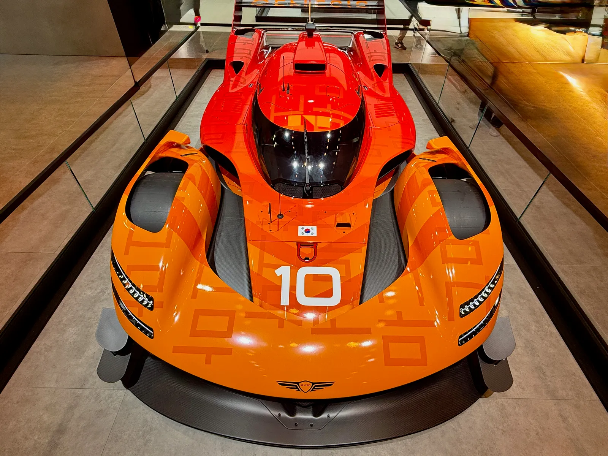
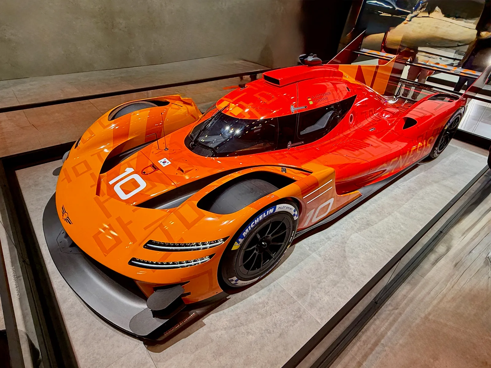
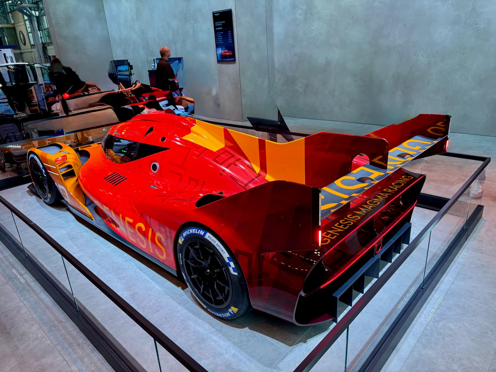
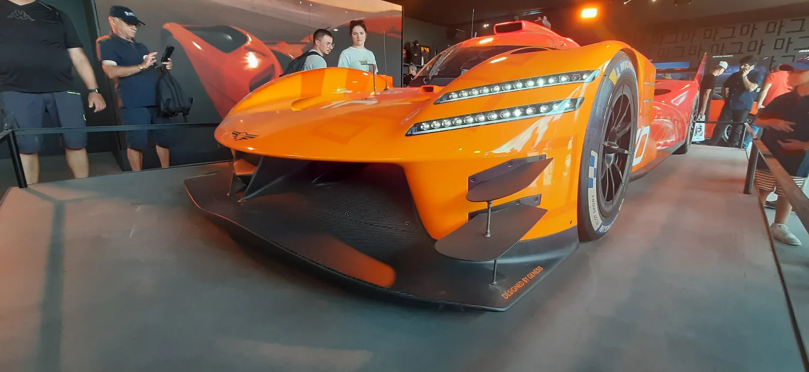

▲ 제네시스 마그마 레이싱의 GMR-001 디자인 리빌 사양(10번 데칼). 실제 2026 르망 24시간 출전 차량은 #17·#19 번호를 달았다 ⓒ Wikimedia Commons
르망의 흙과 타이어 자국을 그대로 묻힌 채, 그 차가 한국 팬들 앞에 선다.
제네시스가 자사 최초의 르망 24시간 하이퍼카 'GMR-001' 실차를 국내에서 처음으로 공개한다. 무대는 오는 9월 24일부터 27일까지 경기 하남 스타필드에서 열리는 '제네시스 마그마 레이싱 라이브 페스티벌'. 지난 6월 르망 24시간 레이스를 완주한 19번 차량이 국내 관람객 앞에 실물로 전시된다.
1. GMR-001, 제네시스의 첫 르망 하이퍼카
GMR-001은 제네시스가 처음으로 만든 르망 하이퍼카다. LMDh 규정을 기반으로 개발됐으며, 현대자동차그룹의 고성능 서브 브랜드 '마그마' 정체성을 앞세운 프로젝트 팀 '제네시스 마그마 레이싱'이 운영한다. 2025년 실물 크기 모델을 처음 공개한 뒤, 2026년 FIA 세계내구선수권(WEC)에 정식 참전하며 6월 르망 24시간 레이스로 데뷔했다.
📍 제네시스 마그마 레이싱의 르망 두 대, 그리고 하남에 오는 차량
제네시스 마그마 레이싱은 2026년 르망 24시간에 #17과 #19 두 대의 GMR-001을 출전시켰다. 앙드레 로터러·마티스 조베르·피포 데라니가 몬 #17은 경주 중반 서스펜션 고장으로 완주하지 못했고, 폴루 샤탱·마티유 자미네·다니 준카델라가 몬 #19가 372랩을 달려 13위로 완주했다. 이번 하남 전시에 오는 차량이 바로 이 #19다.
2. 르망 24시간, 372랩·5,069km의 기록
이번에 전시되는 19번 차량은 지난 6월 프랑스 르망에서 열린 24시간 내구레이스를 완주했다. 24시간 동안 372랩, 약 5,069km를 달려 최종 13위로 레이스를 마쳤다. 완주 자체가 쉽지 않은 르망 하이퍼카 클래스에서, 데뷔 시즌에 완주 기록을 남겼다는 점이 이번 전시의 의미를 더한다. #19를 몬 드라이버는 폴루 샤탱(Paul-Loup Chatin), 마티유 자미네(Mathieu Jaminet), 다니 준카델라(Dani Juncadella) 세 명으로, 팀 프린시펄 시릴 아비트불(Cyril Abiteboul)은 "최소 한 대를 완주시키는 것이 이번 레이스의 최우선 목표였다"고 밝힌 바 있다.
| 항목 | 기록 |
|---|---|
| 완주 랩 수 | 372랩 |
| 주행 거리 | 약 5,069km |
| 최종 순위 | 13위 |
| 레이스 일자 | 2026년 6월 |
이 실물 차량은 경주를 마친 상태 그대로, 손을 대지 않고 국내로 들여와 전시되는 것으로 알려졌다. 타이어 마모 흔적이나 차체에 남은 접촉 흔적까지 그대로 볼 수 있다는 점에서 실제 레이스카를 가까이서 살펴볼 기회다.

▲ GMR-001의 조종석 캐노피와 측면 라인. 공기역학을 극대화한 르망 하이퍼카 특유의 실루엣이 드러난다 ⓒ Wikimedia Commons
3. 마그마 레이싱 라이브 페스티벌, 무엇을 볼 수 있나
이번 페스티벌은 제네시스가 국내에서 여는 첫 대규모 모터스포츠 팬 행사다. 9월 24일부터 27일까지 경기 하남 스타필드 사우스 아트리움과 제네시스 스튜디오 하남에서 열린다.
✅ 행사장에서 즐길 수 있는 것들
· WEC와 제네시스 마그마 레이싱의 여정을 소개하는 전시·영상
· 레이싱 시뮬레이터와 반응속도 게임 체험
· 드라이버 훈련 루틴을 간접 체험할 수 있는 코너
· 엽서 제작·타투 스티커 체험, GMR-001 미니어처 모델 판매
· 스탬프 미션 참여 시 추첨을 통한 경품 증정
행사 상세 일정은 제네시스 공식 채널에서 확인할 수 있다. 행사 관련 보도 바로가기
4. 또 하나의 국내 최초 — 마그마 GT3 콘셉트
이번 페스티벌에서는 GMR-001 외에 '마그마 GT3 콘셉트'도 국내 최초로 전시된다. 마그마 GT3 콘셉트는 지난 6월 르망 24시간 레이스 기간 중 처음 공개된 차량으로, 제네시스 스튜디오 하남에 별도로 전시될 예정이다. GMR-001이 최상위 하이퍼카 클래스라면, GT3 콘셉트는 더 폭넓은 고객층을 겨냥한 양산형 레이스카 성격이 강하다는 점에서 두 차량은 서로 다른 각도에서 제네시스의 모터스포츠 방향을 보여준다.

▲ GMR-001의 후면. 대형 리어윙과 디퓨저는 르망 하이퍼카 규정에 맞춰 설계됐다 ⓒ Wikimedia Commons
5. 마지막 날엔 후지 6시간 레이스 실시간 중계도
페스티벌 마지막 날인 9월 27일에는 WEC 시즌 6라운드 '후지 6시간 레이스'가 현장과 연계돼 중계된다. 하남 스타필드 행사장은 물론, 인근 메가박스 하남 스타필드 상영관에서도 대형 스크린과 극장 사운드로 실시간 관람이 가능하다. 실물 하이퍼카 전시와 실제 경기 시청을 같은 날 같은 장소에서 연결한 구성이다.

▲ 낮은 전고와 넓은 프론트 스플리터가 특징인 GMR-001의 전면부 ⓒ Wikimedia Commons
6. 요약
제네시스가 르망 24시간 레이스를 완주한 하이퍼카 GMR-001 실차를 국내 최초로 공개한다. 9월 24일부터 27일까지 경기 하남 스타필드에서 열리는 '제네시스 마그마 레이싱 라이브 페스티벌'을 통해서다.
전시되는 19번 차량은 지난 6월 372랩, 약 5,069km를 달려 13위로 완주한 실제 경주 차량이다. 같은 행사에서 르망에서 처음 공개된 '마그마 GT3 콘셉트'도 함께 국내 최초로 전시된다.
행사 마지막 날에는 WEC 후지 6시간 레이스 실시간 중계도 예정돼 있어, 이번 페스티벌은 제네시스가 국내에서 여는 첫 대규모 모터스포츠 팬 행사로 자리매김할 전망이다.